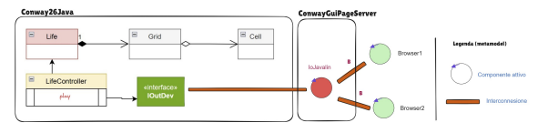

1. Il gioco Life deve avere una pagina HTML che serve per vedere e controllare il gioco. 2. Questa pagina HTML deve essere separata dall’applicazione, seguendo l’architettura usata in IoJavalin (quindi frontend e backend separati). 3. Il primo utente che apre la pagina diventa l’owner: solo lui può usare i pulsanti START, STOP, CLEAN, EXIT, gli altri utenti possono solo vedere 4. La pagina deve aggiornarsi automaticamente mentre il gioco va avanti (senza ricaricare a mano). 5. Se un altro utente entra mentre il gioco è già iniziato, deve vedere subito la griglia aggiornata correttamente. 6. (Opzionale) La pagina può mostrare se: il gioco continua anche con griglia vuota oppure se è arrivato a una configurazione stabile 7. Il gioco deve essere eseguito usando Docker (quindi deve funzionare dentro un container).
La pagina HTML costituisce un componente esterno all’applicazione, secondo l’architettura IoJavalin.
La pagina funge da dispositivo di I/O: riceve aggiornamenti dal server e permette all’utente owner di inviare comandi.
Solo il primo utente collegato (owner) può interagire con i pulsanti START, STOP, CLEAR, EXIT.
CODICE
La mappa è rappresentata come una griglia di div (map), dove ogni cella può essere viva o morta.
Le celle possono essere cliccate per inviare comandi al server tramite sendCmdToServer.
La pagina si aggiorna automaticamente con i messaggi ricevuti dal server (onmessage) permettendo agli utenti non owner di vedere lo stato attuale della griglia.
CallerServerInteraction rappresenta un client attivo che può inviare comandi:
CODICE
Il client invia comandi alla logica di Life. ObserverServerInteraction rappresenta un client passivo, che riceve aggiornamenti e visualizza lo stato della griglia.
Questa struttura garantisce che nuovi utenti vedano sempre lo stato corrente della griglia, soddisfacendo il requisito multi-client.
In discussione con il committente si è stabilito che la pagina HTML deve aggiornarsi automaticamente man mano che il gioco procede, così che sia l’owner sia gli altri utenti vedano lo stato corretto.
CODICE
La funzione draw(grid) si occupa di renderizzare visivamente la griglia. requestAnimationFrame garantisce un aggiornamento fluido e non blocca il browser.
Tutti i client connessi vedono la stessa griglia in tempo reale, anche chi non è owner, soddisfacendo il requisito di sincronizzazione.
